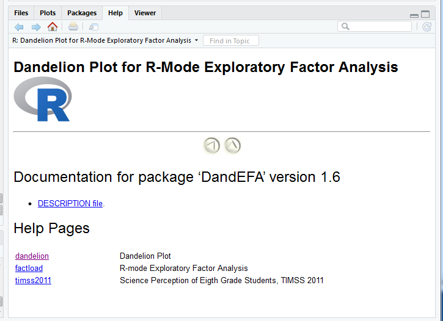

x = 5
y <- 8
z <- x+y
z
13
In the following two weeks you will learn:
dplyr to manipulate data with R.ggplot for data visualization with R.


If you are a beginner at R and will only use it for the lecture then you may not want to install it into your computer.
A great alternative for this is to use Posit Cloud.
Posit is the company that is the founder of RStudio and provides a cloud solution for using R and Rstudio.
First, go to the website of Posit
Click Sign Up at the upper right part of the page


Typically, a problem you may be encountering is not new and others have faced, solved, and documented the same issue online.
x = 5
y <- 8
z <- x+y
z43 + 35 # addition43 - 35 # subtraction12 * 8 # multiplication100 / 8 # division2^4 # power100 %% 8 # remainder100 %/% 8 # divident5 < 82 + 2 == 5T == TRUE3 * 3 == 93 * 3 != 83 * 3 != 9Functions are special commands that are designed for a particular purpose.
For example sum() gives the sum of a numerical values, sqrt() takes root of a number etc..
Functions are always followed by a (). Inside the () most of the functions take some special values called arguments.
Lets look at the help page for the sqrt() function.
?sqrt{r, out.width = "80%", fig.asp=.75, echo=FALSE, fig.align= "center", fig.cap="Help Documentation for sqrt() function"} knitr::include_graphics("./figures/help_sqrt.png")
sqrt() function only takes one argument x which is either a single number, or arrays of numbers.sqrt(8)sqrt(c(1,4,9,16,25))help page for the sum() function.?sum{r, out.width = "80%", fig.asp=.75, echo=FALSE, fig.align= "center", fig.cap="Help Documentation for sum() function"} knitr::include_graphics("./figures/help_sum.png")
sum(..., na.rm = FALSE)sum() function takes two arguments.
... numeric or complex or logical vectors.na.rm logical. Should missing values (including NaN) be removed?na.rm has a default value of FALSE. A default value means that if you don’t specify a value, it will take the default value, here FALSE.x<- c(6, 8, 10, 12, 14)sum(x)sum(x, na.rm = FALSE)sum(x, na.rm = TRUE)y<- c(6, 8, 10, 12, NA)sum(y)sum(y, na.rm = FALSE)sum(y, na.rm = TRUE)z <- c(T, T, F, F, F, T, T)
sum(z)e1071 package, spatstat package and DandEFA package, etc.# install.packages('DandEFA')library(DandEFA) # Buy you have to call and load a package every new R session.Tools -> Install Packages
help(package="DandEFA")

#packageDescription("DandEFA")DandEFA package and can be applied directly.library(DandEFA) # loading the package
data(timss2011) # loading the dataset
timss2011 <- na.omit(timss2011) # removing the rows with missing values
dandpal <- rev(rainbow(100, start = 0, end = 0.2)) # Choose colors for visualisation
facl <- factload(timss2011,nfac=5,method="prax",cormeth="spearman") # Find the factor loadings
facl # Show the factor loadings
dandelion(facl,bound=0,mcex=c(1,1.2),palet=dandpal) # Visualise
Loadings:
[,1] [,2] [,3] [,4] [,5]
X10A 0.103 -0.101 -0.224
X10B
X10C 0.106 -0.129
X11A -0.544 -0.130
X11B -0.514
X11C -0.129 -0.105 -0.500
X11D -0.475
X12A -0.116 -0.152 -0.338 0.318
X12B -0.254 -0.133 -0.328 0.256
X12C -0.149 -0.136 -0.298 0.249
X13A 0.549
X13B 0.504
X13C 0.583
X13D 0.398
X13E 0.595
X13F 0.458
X17A -0.539 -0.419 -0.140
X17B 0.633 0.156 -0.164
X17C -0.350 -0.450 -0.185
X17D 0.727 0.222 -0.173
X17E -0.325 -0.337 -0.164
X17F -0.611 -0.445 -0.143
X17G -0.252 -0.481 -0.145 0.157
X18A -0.303 -0.420 -0.267 -0.138
X18B 0.537 0.146 0.152 -0.152
X18C -0.353 -0.326 -0.192
X18D -0.416 -0.413 -0.277
X18E -0.160 -0.381 -0.239 -0.125
X19A -0.540 -0.443 -0.135 -0.254
X19B 0.633 0.119
X19C 0.694 0.158
X19D -0.519 -0.424 -0.163 -0.256
X19E 0.687 0.112
X19F -0.415 -0.462 -0.124 -0.361
X19G -0.313 -0.491 -0.220 -0.359
X19H -0.383 -0.500 -0.214 -0.361
X19I 0.690
X19J -0.238 -0.507 -0.158
X19K -0.620 0.142
X19L -0.714 0.124
X19M -0.749 0.101
X19N -0.184 -0.654
X21A -0.120 -0.106
[,1] [,2] [,3] [,4] [,5]
SS loadings 5.576 1.851 4.965 1.987 1.076
Proportion Var 0.130 0.043 0.115 0.046 0.025
Cumulative Var 0.130 0.173 0.288 0.334 0.359
getwd()working directory, you will probably get errors during importing dataset and locating files. So be careful.# returns path for the current working directory
getwd()setwd() function or by using Session \(\rightarrow\) Set Working Directory \(\rightarrow\) To Source File Location after saving a script.# set the working directory to a specified directory
setwd("C:/Users/erhan/Desktop")
getwd()setwd("C:/Users/erhan/Documents/FEF1002")
getwd()x <- c(10.4, 5.6, 3.1, 6.4, 21.7) # Numeric Vector
xx <- c("boy","girl","boy","girl","boy","boy") # character vector
xx <- c(TRUE,TRUE,FALSE,TRUE,TRUE,FALSE) # logical vector
x# or you can use
x <- c(T,T,F,T,T,F) # logical vector
xc(10, 20, 26, T) # numeric and logical valuesc(10, 20, 26, "apple") # numeric and stringc(T, F, "apple", "banana") # logical and stringc(T, "apple", 10) # logical, string, numericx <- c(10.4, 5.6, 3.1, 6.4, 21.7) # Numeric VectorIndexing in R starts with 1 opposing to some programming languages like Python which starts indexing with 0.
Select fifth element of the vector.
x[5]ind <- c(1,3,5)
x[ind]ind <- c(F,T,F,T,F)
x[ind]x <- c(10.4, 5.6, 3.1, 6.4, 21.7) # Numeric Vectorind <- (x > 7)
indx[ind]x[!ind]x <- c(10.4, 5.6, 3.1, 6.4, 21.7) # Numeric Vectorx[x > 7]x <- c(10.4, 5.6, 3.1, 6.4, 21.7)
y <- c(4, 7, 8, 2, 35)ind <- (x > y)
indx <- c(10.4, 5.6, 3.1, 6.4, 21.7)
y <- c(4,7,8,2)ind <- (x > y)Warning message in x > y:
"longer object length is not a multiple of shorter object length"indx <- c(10.4, 5.6, 3.1, 6.4, 21.7)x[4] <- 7.3
xx <- c(10.4, 5.6, 3.1, 6.4, 21.7)x[x > 7] <- 100
xx <- c(10.4, NA, 3.1, 6.4, NA)is.na(x)x[is.na(x)] <- mean(x, na.rm = TRUE)
xx <- c(10.4, 5.6, 3.1, 6.4, 21.7)
y <- c(4, 7, 8, 2, 35)
z <- c(x,y)zx
yz <- x + y
zz <- x * y
z:,x <- 1:10
xx <- 2*(1:10)
xseq() function.x <- seq(1,10)
xx <- seq(1,10,by=0.5)
xrep() function.x <- rep(3, 10)
xy <- rep(c(F,T,F,T,T,T),3)
yz1 <- rep(c(4,7,8,2,35),each=3)
z1z2 <- rep(c(4,7,8,2,35), times = 3)
z2x <- c(2,4,6,8,10)
y <- c("apple", "banana", "peach", "walnut", "apple")sum(x)sum(x < 6)mean(x < 6)x[x < 6]x
ymean(y=="apple")mean(x > 6 & y=="apple")A factor is a special type of vector used to represent categorical data, e.g. gender, social class, etc.
Five people are asked to rate the performance of a product on a scale of 1-5, with 1 representing very poor performance and 5 representing very good performance. The following data were collected.
satisfaction <- c(1, 3, 4, 2, 2, 3, 4, 2, 1, 2, 1, 1, 4, 3)levels=1:5 argument indicates that there are 5 levels of the factor. We also set the labels for each factor.fsatisfaction <- factor(satisfaction,
levels=1:5,
labels = c("very poor", "poor", "average","good", "very good"))fsatisfactionset.seed(100) # to ensure the numbers are same for each of you
m <- rnorm(12,0,1)
mdim(m) <- c(3,4)
m| -0.50219235 | 0.8867848 | -0.5817907 | -0.35986213 |
| 0.13153117 | 0.1169713 | 0.7145327 | 0.08988614 |
| -0.07891709 | 0.3186301 | -0.8252594 | 0.09627446 |
matrix() functionset.seed(100) # to ensure the numbers are same for each of you
m <- rnorm(12)
mm <- matrix(m, nrow = 3, ncol = 4, byrow = F)
m| -0.50219235 | 0.8867848 | -0.5817907 | -0.35986213 |
| 0.13153117 | 0.1169713 | 0.7145327 | 0.08988614 |
| -0.07891709 | 0.3186301 | -0.8252594 | 0.09627446 |
nrow() and ncol() calls numbers of rows and columns.t() calls the transpose of the matrix.rownames() and colnames() are the names of columns and rows.set.seed(100) # to ensure the numbers are same for each of you
m <- rnorm(12)
m <- matrix(m, nrow = 3, ncol = 4, byrow = F)
m| -0.50219235 | 0.8867848 | -0.5817907 | -0.35986213 |
| 0.13153117 | 0.1169713 | 0.7145327 | 0.08988614 |
| -0.07891709 | 0.3186301 | -0.8252594 | 0.09627446 |
nrow(m)ncol(m)colnames(m) <- c("A", "B", "C", "D")
m| A | B | C | D |
|---|---|---|---|
| -0.50219235 | 0.8867848 | -0.5817907 | -0.35986213 |
| 0.13153117 | 0.1169713 | 0.7145327 | 0.08988614 |
| -0.07891709 | 0.3186301 | -0.8252594 | 0.09627446 |
rbind() and cbind() functions merges vectors or matrices into matrices.set.seed(100)
X1 <- rnorm(12)
X2 <- 1:12m <- cbind(X1,X2)
m| X1 | X2 |
|---|---|
| -0.50219235 | 1 |
| 0.13153117 | 2 |
| -0.07891709 | 3 |
| 0.88678481 | 4 |
| 0.11697127 | 5 |
| 0.31863009 | 6 |
| -0.58179068 | 7 |
| 0.71453271 | 8 |
| -0.82525943 | 9 |
| -0.35986213 | 10 |
| 0.08988614 | 11 |
| 0.09627446 | 12 |
Number of columns should be equal for rbind.
Likewise, number of rows should be equal for cbind.
Create two matrices
set.seed(100)
data_1 <- matrix(rnorm(12),nrow=3,ncol=4,byrow=T)
data_2 <- matrix(rnorm(16),nrow=4,ncol=4,byrow=F)data_new <- rbind(data_1,data_2)
data_new| -0.50219235 | 0.1315312 | -0.07891709 | 0.88678481 |
| 0.11697127 | 0.3186301 | -0.58179068 | 0.71453271 |
| -0.82525943 | -0.3598621 | 0.08988614 | 0.09627446 |
| -0.20163395 | -0.3888542 | -0.43808998 | -0.81437912 |
| 0.73984050 | 0.5108563 | 0.76406062 | -0.43845057 |
| 0.12337950 | -0.9138142 | 0.26196129 | -0.72022155 |
| -0.02931671 | 2.3102968 | 0.77340460 | 0.23094453 |
set.seed(100) # to ensure the numbers are same for each of you
m <- matrix(rnorm(12), nrow = 3, ncol = 4, byrow = F)
m| -0.50219235 | 0.8867848 | -0.5817907 | -0.35986213 |
| 0.13153117 | 0.1169713 | 0.7145327 | 0.08988614 |
| -0.07891709 | 0.3186301 | -0.8252594 | 0.09627446 |
m[1,]m[,2]m[-1,]| 0.13153117 | 0.1169713 | 0.7145327 | 0.08988614 |
| -0.07891709 | 0.3186301 | -0.8252594 | 0.09627446 |
m[, -c(1,3)]| 0.8867848 | -0.35986213 |
| 0.1169713 | 0.08988614 |
| 0.3186301 | 0.09627446 |
index_row <- 1:3
index_col <- c(1,3,4)m[index_row,index_col]| -0.50219235 | -0.5817907 | -0.35986213 |
| 0.13153117 | 0.7145327 | 0.08988614 |
| -0.07891709 | -0.8252594 | 0.09627446 |
m[1:3, c(1,3,4)]| -0.50219235 | -0.5817907 | -0.35986213 |
| 0.13153117 | 0.7145327 | 0.08988614 |
| -0.07891709 | -0.8252594 | 0.09627446 |
A data frame
Data in the same position across columns come from the same experimental unit.
Can create data frames from pre-existing variables.
The main spec of data frame is the ability to keep variables with different forms.
Both numeric, string and logical variables can be reserved in a single dataframe unlike vectors and matrices.
Creata a vector called mean_weight.
mean_weight <- c(179.3, 179.9, 180.5, 180.1, 180.3, 180.4)
mean_weightGender.Gender <- c("M", "M", "F", "F", "M", "M")
GenderGender to a factor variable.Gender <- factor(Gender,levels=c("M","F"))
Genderd <- data.frame(mean_weight, Gender)
d| mean_weight | Gender |
|---|---|
| 179.3 | M |
| 179.9 | M |
| 180.5 | F |
| 180.1 | F |
| 180.3 | M |
| 180.4 | M |
mean_weight is numeric.Gender is factor.You can also convert other data types to dataframes
d <- cbind(mean_weight,Gender)
d| mean_weight | Gender |
|---|---|
| 179.3 | 1 |
| 179.9 | 1 |
| 180.5 | 2 |
| 180.1 | 2 |
| 180.3 | 1 |
| 180.4 | 1 |
mean_weight and Gender. Gender is automatically converted to a numerical variable as variables in the matrices should be in the same data type.d <- as.data.frame(d)
d| mean_weight | Gender |
|---|---|
| 179.3 | 1 |
| 179.9 | 1 |
| 180.5 | 2 |
| 180.1 | 2 |
| 180.3 | 1 |
| 180.4 | 1 |
Gender is gone.[ ], double bracket [[ ]] or $ sign.R behaves.d$mean_weight # output in vector formatd[["mean_weight"]] # output in vector formatd[,1] # output in vector formatd[,"mean_weight"] # output in vector formatd["mean_weight"] # output in dataframe format| mean_weight |
|---|
| 179.3 |
| 179.9 |
| 180.5 |
| 180.1 |
| 180.3 |
| 180.4 |
d[1] # output in dataframe format| mean_weight |
|---|
| 179.3 |
| 179.9 |
| 180.5 |
| 180.1 |
| 180.3 |
| 180.4 |
d[c(1,4,5),] # Shows 1., 4. and 5. rows of the dataframe| mean_weight | Gender | |
|---|---|---|
| 1 | 179.3 | 1 |
| 4 | 180.1 | 2 |
| 5 | 180.3 | 1 |
drop=FALSE when indexing (to sustain the data frame type).d[1:3,"mean_weight"]d[1:3,"mean_weight",drop=FALSE]| mean_weight |
|---|
| 179.3 |
| 179.9 |
| 180.5 |
d| mean_weight | Gender |
|---|---|
| 179.3 | 1 |
| 179.9 | 1 |
| 180.5 | 2 |
| 180.1 | 2 |
| 180.3 | 1 |
| 180.4 | 1 |
d$color <- NA
d| mean_weight | Gender | color |
|---|---|---|
| 179.3 | 1 | NA |
| 179.9 | 1 | NA |
| 180.5 | 2 | NA |
| 180.1 | 2 | NA |
| 180.3 | 1 | NA |
| 180.4 | 1 | NA |
d$weight_two_times <- d$mean_weight*2
d| mean_weight | Gender | color | weight_two_times |
|---|---|---|---|
| 179.3 | 1 | NA | 358.6 |
| 179.9 | 1 | NA | 359.8 |
| 180.5 | 2 | NA | 361.0 |
| 180.1 | 2 | NA | 360.2 |
| 180.3 | 1 | NA | 360.6 |
| 180.4 | 1 | NA | 360.8 |
read.table() function is used mainly for reading data from formatted text files.read.csv() function is used mainly for reading data from files with csv format (“Comma Separated Values”format)read_excel() function is used to read data directly from an excel file. It requires the external package readxl.You can download the datasets used in this lecture from the lecturers AVESIS page.
getwd()setwd() function.Session -> Set Working Directory -> To Source File Location
getwd()C:/Users/erhan/Documents/FEF1002/pima.datFEF1002, if I put my pima.dat data inside the FEF1002 folder, it would be sufficient for me to provide pima.dat as the location.pima_data <- read.table("pima.dat", header = TRUE, sep = " ")and
You can use the head() function to see if everything is imported okay.
head(pima_data)| NTP | PGC | DBP | TSFT | SI | BMI | DPF | Age | Diabetes |
|---|---|---|---|---|---|---|---|---|
| 6 | 148 | 72 | 35 | 0 | 33.6 | 0.627 | 50 | positive |
| 1 | 85 | 66 | 29 | 0 | 26.6 | 0.351 | 31 | negative |
| 8 | 183 | 64 | 0 | 0 | 23.3 | 0.672 | 32 | positive |
| 1 | 89 | 66 | 23 | 94 | 28.1 | 0.167 | 21 | negative |
| 0 | 137 | 40 | 35 | 168 | 43.1 | 2.288 | 33 | positive |
| 5 | 116 | 74 | 0 | 0 | 25.6 | 0.201 | 30 | negative |
str() function to see the structure of the dataset.str(pima_data)
pima_data <- read.table("C:/Users/erhan/Documents/FEF1002/pima.dat",
header = TRUE, sep = " ")will work and import the data. * Remember to change C:/Users/erhan/Documents/FEF1002/pima.dat to where the pima.dat is actually located. * You can use both approach for the following data importing processes.
head(pima_data)| NTP | PGC | DBP | TSFT | SI | BMI | DPF | Age | Diabetes |
|---|---|---|---|---|---|---|---|---|
| 6 | 148 | 72 | 35 | 0 | 33.6 | 0.627 | 50 | positive |
| 1 | 85 | 66 | 29 | 0 | 26.6 | 0.351 | 31 | negative |
| 8 | 183 | 64 | 0 | 0 | 23.3 | 0.672 | 32 | positive |
| 1 | 89 | 66 | 23 | 94 | 28.1 | 0.167 | 21 | negative |
| 0 | 137 | 40 | 35 | 168 | 43.1 | 2.288 | 33 | positive |
| 5 | 116 | 74 | 0 | 0 | 25.6 | 0.201 | 30 | negative |
str(pima_data)'data.frame': 768 obs. of 9 variables:
$ NTP : int 6 1 8 1 0 5 3 10 2 8 ...
$ PGC : int 148 85 183 89 137 116 78 115 197 125 ...
$ DBP : int 72 66 64 66 40 74 50 0 70 96 ...
$ TSFT : int 35 29 0 23 35 0 32 0 45 0 ...
$ SI : int 0 0 0 94 168 0 88 0 543 0 ...
$ BMI : num 33.6 26.6 23.3 28.1 43.1 25.6 31 35.3 30.5 0 ...
$ DPF : num 0.627 0.351 0.672 0.167 2.288 ...
$ Age : int 50 31 32 21 33 30 26 29 53 54 ...
$ Diabetes: Factor w/ 2 levels "negative","positive": 2 1 2 1 2 1 2 1 2 2 ...header = TRUE is used to denote that the variable names are given at the first line of the data.sep = " " is used to denote how the variables are separated from each other. For this dataset space is used to separate variables.pima_csv <- read.csv("pima.csv", header = TRUE, sep = ",")head(pima_csv)| NTP | PGC | DBP | TSFT | SI | BMI | DPF | Age | Diabetes |
|---|---|---|---|---|---|---|---|---|
| 6 | 148 | 72 | 35 | 0 | 33.6 | 0.627 | 50 | positive |
| 1 | 85 | 66 | 29 | 0 | 26.6 | 0.351 | 31 | negative |
| 8 | 183 | 64 | 0 | 0 | 23.3 | 0.672 | 32 | positive |
| 1 | 89 | 66 | 23 | 94 | 28.1 | 0.167 | 21 | negative |
| 0 | 137 | 40 | 35 | 168 | 43.1 | 2.288 | 33 | positive |
| 5 | 116 | 74 | 0 | 0 | 25.6 | 0.201 | 30 | negative |
str(pima_csv)'data.frame': 768 obs. of 9 variables:
$ NTP : int 6 1 8 1 0 5 3 10 2 8 ...
$ PGC : int 148 85 183 89 137 116 78 115 197 125 ...
$ DBP : int 72 66 64 66 40 74 50 0 70 96 ...
$ TSFT : int 35 29 0 23 35 0 32 0 45 0 ...
$ SI : int 0 0 0 94 168 0 88 0 543 0 ...
$ BMI : num 33.6 26.6 23.3 28.1 43.1 25.6 31 35.3 30.5 0 ...
$ DPF : num 0.627 0.351 0.672 0.167 2.288 ...
$ Age : int 50 31 32 21 33 30 26 29 53 54 ...
$ Diabetes: Factor w/ 2 levels "negative","positive": 2 1 2 1 2 1 2 1 2 2 ...header = TRUE) and variables are separated with comma (sep = ",").xls or .xlsx formatreadxl package.library(readxl) # Remember youj should use install.packages('readxl') if you didn't install it before
pima_xls <- read_excel("pima.xls", sheet = 'pima')head(pima_xls)| NTP | PGC | DBP | TSFT | SI | BMI | DPF | Age | Diabetes |
|---|---|---|---|---|---|---|---|---|
| 6 | 148 | 72 | 35 | 0 | 33.6 | 0.627 | 50 | positive |
| 1 | 85 | 66 | 29 | 0 | 26.6 | 0.351 | 31 | negative |
| 8 | 183 | 64 | 0 | 0 | 23.3 | 0.672 | 32 | positive |
| 1 | 89 | 66 | 23 | 94 | 28.1 | 0.167 | 21 | negative |
| 0 | 137 | 40 | 35 | 168 | 43.1 | 2.288 | 33 | positive |
| 5 | 116 | 74 | 0 | 0 | 25.6 | 0.201 | 30 | negative |
str(pima_xls)Classes 'tbl_df', 'tbl' and 'data.frame': 768 obs. of 9 variables:
$ NTP : num 6 1 8 1 0 5 3 10 2 8 ...
$ PGC : num 148 85 183 89 137 116 78 115 197 125 ...
$ DBP : num 72 66 64 66 40 74 50 0 70 96 ...
$ TSFT : num 35 29 0 23 35 0 32 0 45 0 ...
$ SI : num 0 0 0 94 168 0 88 0 543 0 ...
$ BMI : num 33.6 26.6 23.3 28.1 43.1 25.6 31 35.3 30.5 0 ...
$ DPF : num 0.627 0.351 0.672 0.167 2.288 ...
$ Age : num 50 31 32 21 33 30 26 29 53 54 ...
$ Diabetes: chr "positive" "negative" "positive" "negative" ...pima_xlsx <- read_excel("pima.xlsx", sheet = 'pima')head(pima_xlsx)| NTP | PGC | DBP | TSFT | SI | BMI | DPF | Age | Diabetes |
|---|---|---|---|---|---|---|---|---|
| 6 | 148 | 72 | 35 | 0 | 33.6 | 0.627 | 50 | positive |
| 1 | 85 | 66 | 29 | 0 | 26.6 | 0.351 | 31 | negative |
| 8 | 183 | 64 | 0 | 0 | 23.3 | 0.672 | 32 | positive |
| 1 | 89 | 66 | 23 | 94 | 28.1 | 0.167 | 21 | negative |
| 0 | 137 | 40 | 35 | 168 | 43.1 | 2.288 | 33 | positive |
| 5 | 116 | 74 | 0 | 0 | 25.6 | 0.201 | 30 | negative |
str(pima_xlsx)Classes 'tbl_df', 'tbl' and 'data.frame': 768 obs. of 9 variables:
$ NTP : num 6 1 8 1 0 5 3 10 2 8 ...
$ PGC : num 148 85 183 89 137 116 78 115 197 125 ...
$ DBP : num 72 66 64 66 40 74 50 0 70 96 ...
$ TSFT : num 35 29 0 23 35 0 32 0 45 0 ...
$ SI : num 0 0 0 94 168 0 88 0 543 0 ...
$ BMI : num 33.6 26.6 23.3 28.1 43.1 25.6 31 35.3 30.5 0 ...
$ DPF : num 0.627 0.351 0.672 0.167 2.288 ...
$ Age : num 50 31 32 21 33 30 26 29 53 54 ...
$ Diabetes: chr "positive" "negative" "positive" "negative" ...sheet inside the read_excel() function.